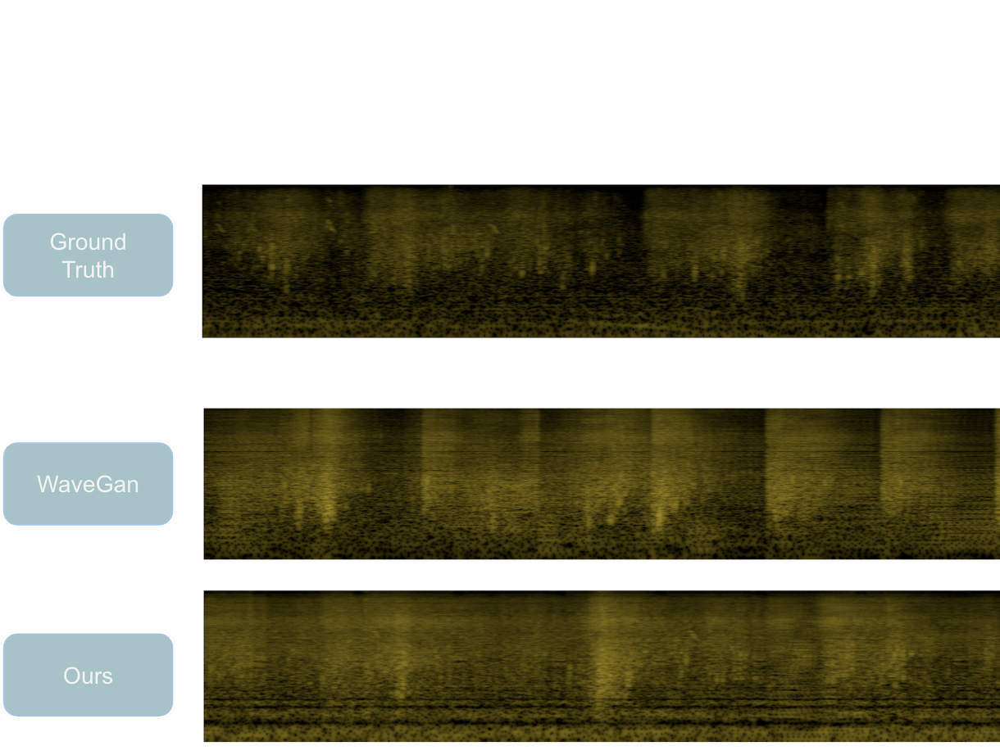
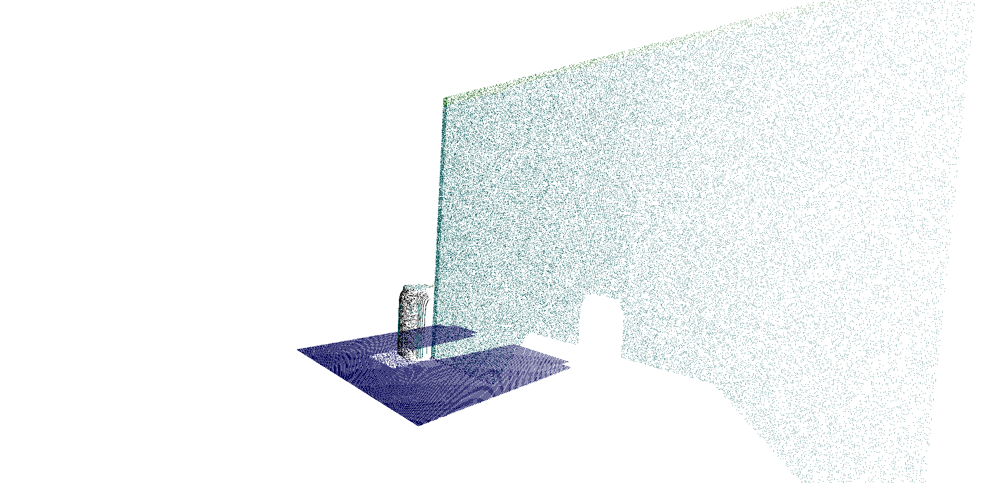

 生成音频频谱分析对比图 基于WaveGAN的自然背景音生成 基于生成对抗网络学习不同数据库模拟生成海浪,鸟鸣等自然背景音. 改进了WaveGAN的网络结构,使之生成更为连续的大段音频. 生成音频样例 抱歉,您的浏览器暂不支持,建议使用最新的chrome或者safari
 Segementation using PointNet 点云环境识别和机械手臂控制 在Gazebo环境中使用ROS搭建机械手臂 使用PCL和PointNet对点云数据进行处理并识别，实现点云语义分割 使用Moveit进行机械手臂的路径规划和避障 集成了Alexa语音接口，实现语音控制机械手 点击查看视频